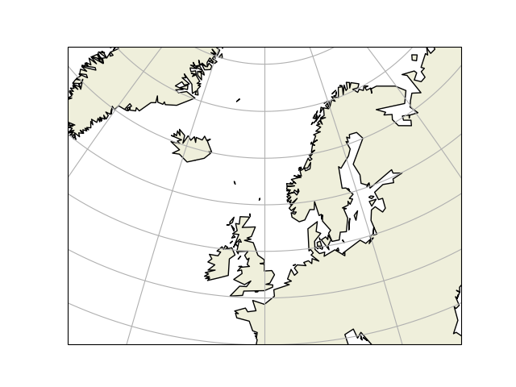
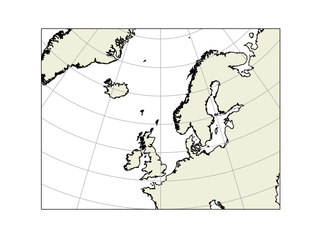
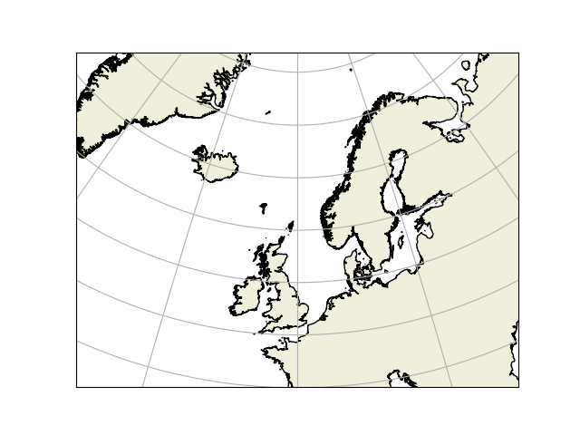

Note
Click here to download the full example code
Plotting map
- 
- 
- 
Out:
coarse LSCALE
/opt/conda/envs/opendrift/lib/python3.9/site-packages/shapefile.py:391: UserWarning: Shapefile shape has invalid polygon: no exterior rings found (must have clockwise orientation); interpreting holes as exteriors.
warnings.warn('Shapefile shape has invalid polygon: no exterior rings found (must have clockwise orientation); interpreting holes as exteriors.')
low LSCALE
intermediate LSCALE
high LSCALE
auto LSCALE
import matplotlib.pyplot as plt
import cartopy.crs as ccrs
import cartopy.feature as cfeature
for lscale in ['coarse', 'low', 'intermediate', 'high', 'auto']:
fig = plt.figure()
sp = ccrs.Stereographic(central_longitude=0, central_latitude=60)
ax = fig.add_subplot(1, 1, 1, projection=sp)
corners = [-30, 30, 45, 75]
#s = cfeature.AdaptiveScaler('coarse',
# (('low', 100), ('intermediate', 20), ('high', 5), ('full', 1)))
#lscale = s.scale_from_extent([corners[0], corners[1], corners[2], corners[3]])
#lscale = 'auto'
print(lscale, 'LSCALE ')
f = cfeature.GSHHSFeature(scale=lscale, levels=[1])
ax.add_geometries(
#f.intersecting_geometries(corners),
f.geometries(),
ccrs.PlateCarree(),
facecolor=cfeature.COLORS['land'],
edgecolor='black')
ax.set_extent(corners, crs=ccrs.PlateCarree())
gl = ax.gridlines(ccrs.PlateCarree())
plt.show()
Total running time of the script: ( 0 minutes 42.441 seconds)